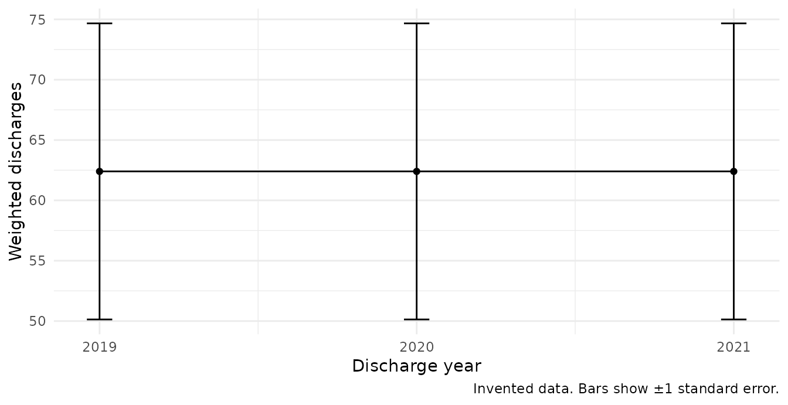

library(easyNIS)
library(dplyr)
library(srvyr)
library(ggplot2)
knitr::opts_chunk$set(collapse = TRUE, comment = "#>")The examples use invented data.
Estimate one national total per year
nis <- nis_open(nis_example(years = 2019:2021)) |>
nis_flag_dx(heart_failure = "I50")
annual <- nis_annual_totals(nis, cohort = heart_failure & AGE >= 18)
reviewed_annual <- nis_suppress(
annual, count_col = n, hospital_col = hospitals,
weighted_cols = c(discharges, discharges_se)
) |>
mutate(across(c(discharges, discharges_se), ~ suppressWarnings(as.numeric(.x))))
ggplot(reviewed_annual, aes(YEAR, discharges)) +
geom_line(na.rm = TRUE) +
geom_point(na.rm = TRUE) +
geom_errorbar(
aes(ymin = discharges - discharges_se, ymax = discharges + discharges_se),
width = 0.08, na.rm = TRUE
) +
scale_x_continuous(breaks = annual$YEAR) +
labs(x = "Discharge year", y = "Weighted discharges",
caption = "Invented data. Bars show ±1 standard error.") +
theme_minimal()
nis_annual_totals() uses original discharge weights and
requires all four quarters in each year. Convert the reviewed values
back to numbers so masked years appear as gaps. For analyses that
include 2015 or cross the ICD transition, use
coding = "verified_comparable" only after establishing
comparability. Years and coding
eras
Estimate an annual proportion within a domain
Here the denominator is adult discharges in each year. The mean of the logical heart-failure flag estimates the share with a matching diagnosis.
adults <- nis_design(nis, cohort = AGE >= 18, keep = heart_failure)
adults |>
group_by(YEAR) |>
summarise(heart_failure_share = survey_mean(heart_failure, vartype = "se"))
#> # A tibble: 3 × 3
#> YEAR heart_failure_share heart_failure_share_se
#> <int> <dbl> <dbl>
#> 1 2019 0.545 0.115
#> 2 2020 0.545 0.115
#> 3 2021 0.545 0.115The result gives proportions and standard errors on the 0 to 1 scale. Multiply both columns by 100 for percent and percentage points, respectively. Review quarter coverage and coding comparability before interpreting a real trend.
Review records outside the analysis years
received <- nis |>
mutate(YEAR = if_else(YEAR == 2021L & KEY_NIS == 1L, NA_integer_, YEAR))
coverage <- received |> count(YEAR) |> collect()
coverage
#> # A tibble: 4 × 2
#> YEAR n
#> <int> <dbl>
#> 1 2020 96
#> 2 NA 1
#> 3 2021 95
#> 4 2019 96
approved_years <- 2019:2021
reviewed <- received |> filter(YEAR %in% approved_years)
nis_annual_totals(reviewed, cohort = heart_failure & AGE >= 18)
#> # A tibble: 3 × 5
#> YEAR discharges discharges_se n hospitals
#> <int> <dbl> <dbl> <int> <int>
#> 1 2019 62.4 12.3 54 9
#> 2 2020 62.4 12.3 54 9
#> 3 2021 61.3 12.2 53 9Check the counts against the expected releases before excluding records. A discharge with an unknown year cannot contribute to an annual total. Record the reviewed years, excluded counts, and reason in the private study folder. The annual check confirms quarter coverage. Review the release counts to assess completeness.
Use an external denominator for a population rate
population <- tibble(YEAR = 2019:2021, adults = c(1000, 1020, 1040))
annual |>
left_join(population, by = "YEAR") |>
transmute(YEAR, per_1000 = discharges / adults * 1000,
se_per_1000 = discharges_se / adults * 1000)
#> # A tibble: 3 × 3
#> YEAR per_1000 se_per_1000
#> <int> <dbl> <dbl>
#> 1 2019 62.4 12.3
#> 2 2020 61.2 12.0
#> 3 2021 60 11.8Use an external population that matches the study years and eligibility. The denominators here are invented. The displayed standard error treats the external denominator as fixed.
Compare a period mean with an annual average
pooled <- nis_design(nis, cohort = heart_failure & AGE >= 18, keep = LOS)
average <- nis_design(
nis, cohort = heart_failure & AGE >= 18, keep = LOS, annualize = TRUE
)
summarise(pooled, mean_los = survey_mean(LOS))
#> # A tibble: 1 × 2
#> mean_los mean_los_se
#> <dbl> <dbl>
#> 1 5.66 0.187
summarise(average, annual_discharges = survey_total())
#> # A tibble: 1 × 2
#> annual_discharges annual_discharges_se
#> <dbl> <dbl>
#> 1 62.4 7.08The period mean weights each discharge. The annualized total divides a pooled discharge count by the number of included years.
Estimate a year slope
fit <- survey::svyglm(LOS ~ I(YEAR - 2019), design = pooled)
summary(fit)$coefficients
#> Estimate Std. Error t value Pr(>|t|)
#> (Intercept) 5.663462e+00 0.2956263 1.91575e+01 6.039735e-13
#> I(YEAR - 2019) 2.646794e-16 0.2289912 1.15585e-15 1.000000e+00The slope estimates the mean change in length of stay per calendar year under a linear model. Review the annual estimates before using one slope for the period.